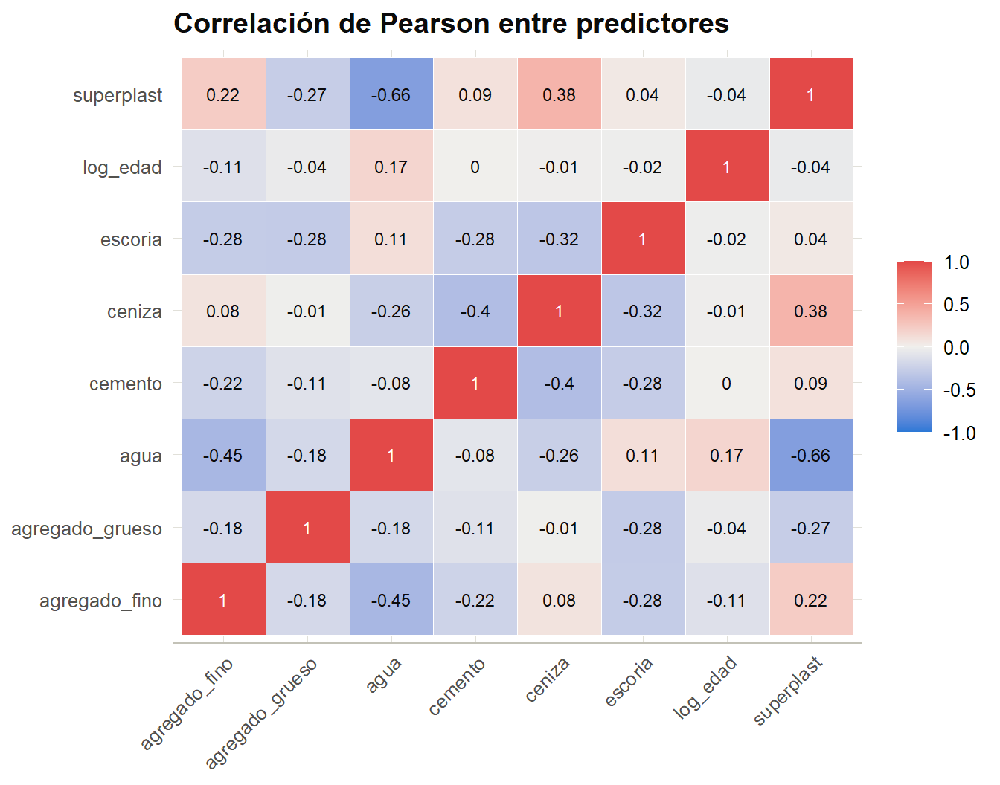
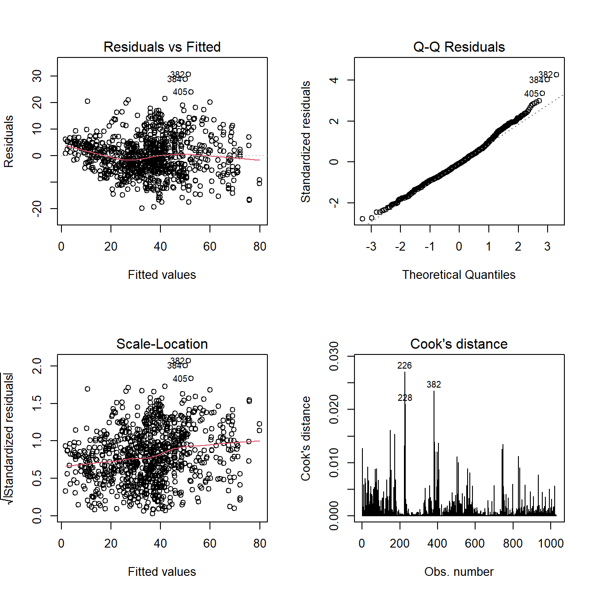
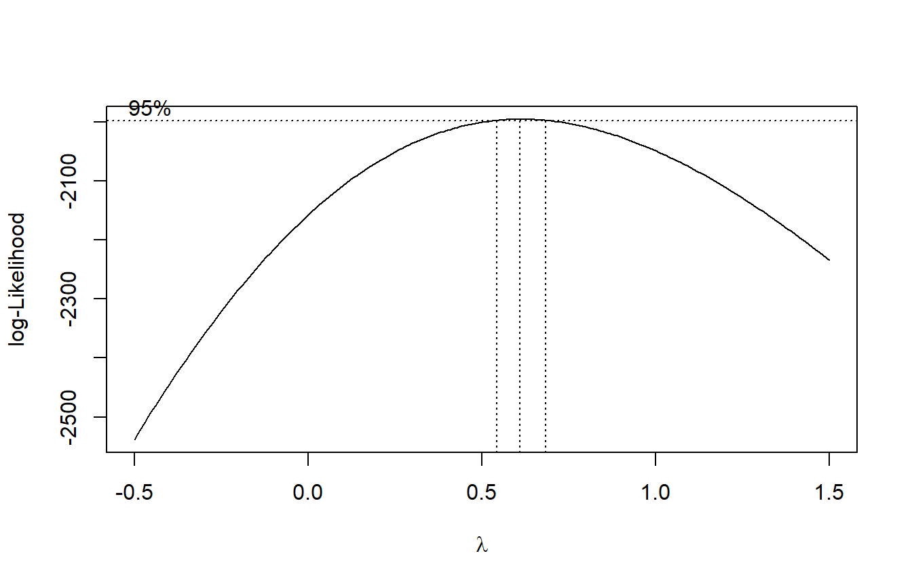
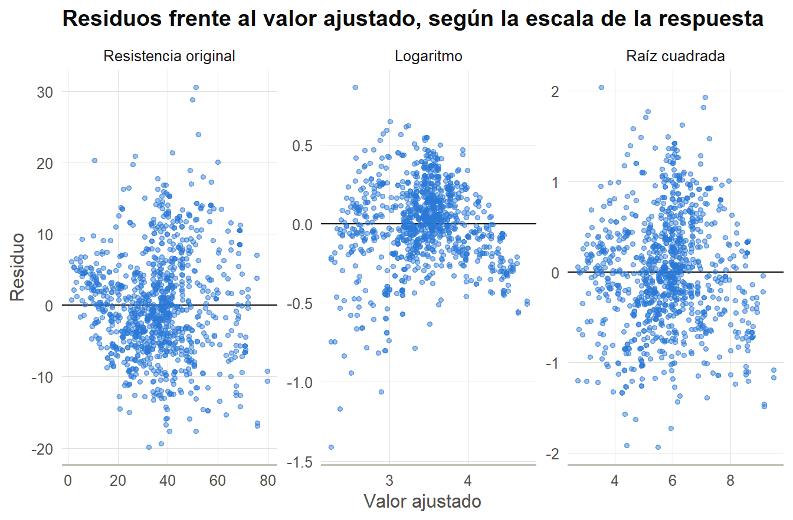
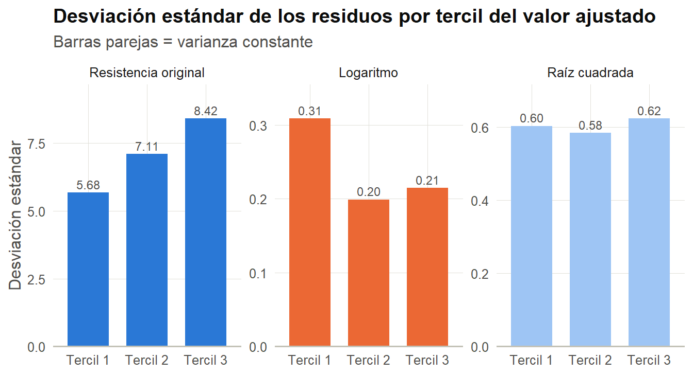
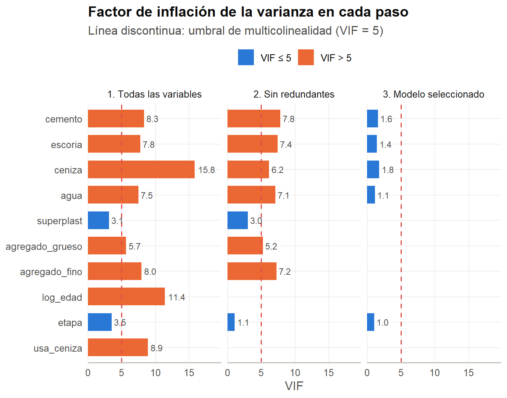
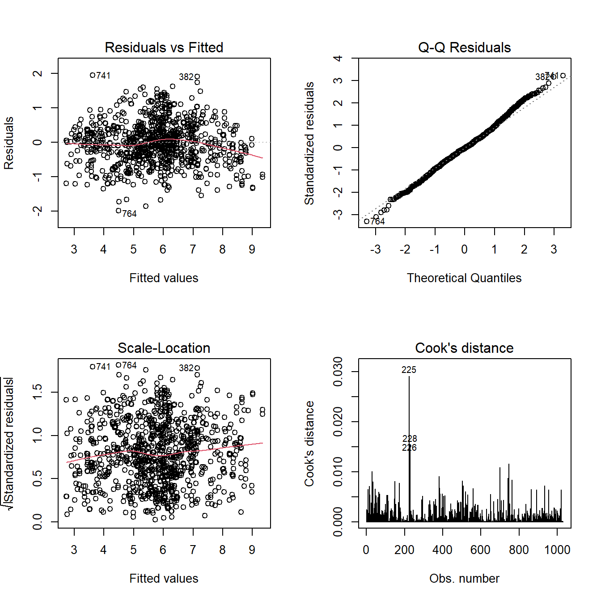
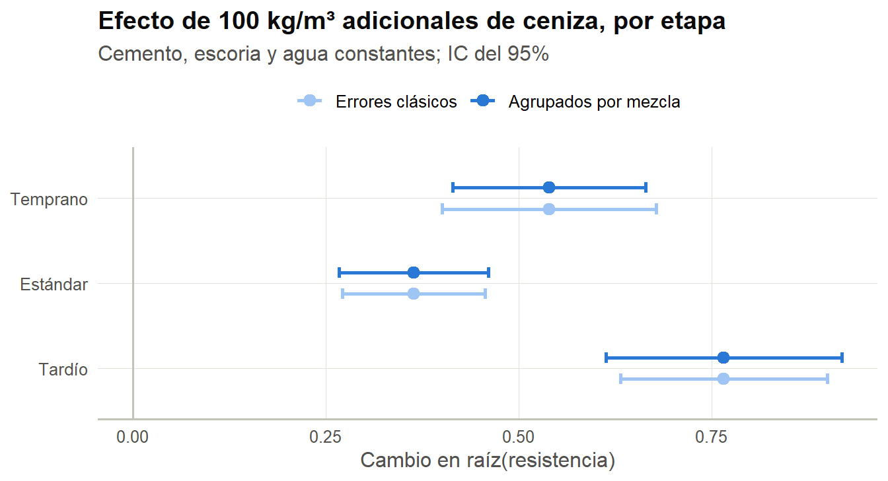
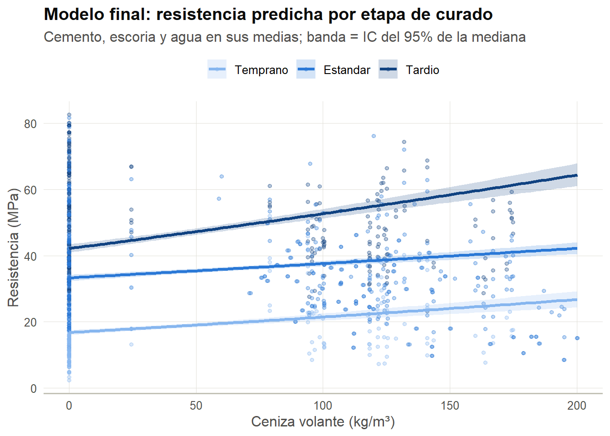
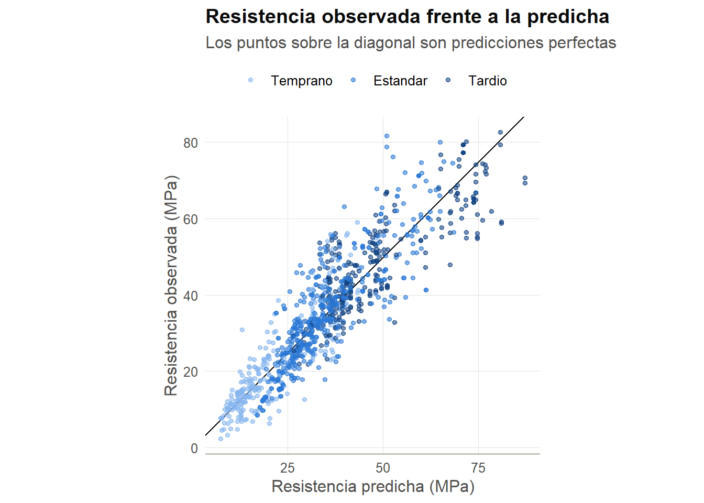

Capítulo 8 Modelo de regresión lineal múltiple
Este capítulo desarrolla el objetivo específico 5: construir un modelo de regresión lineal múltiple para explicar la resistencia del concreto, que incluya la etapa de curado como variable cualitativa (variables dummy), verificando la multicolinealidad, seleccionando variables con el método de todas las regresiones posibles según el AIC y validando los supuestos de los errores.
El modelo es
\[\mathbf{y} = \mathbf{X}\boldsymbol{\beta} + \boldsymbol{\varepsilon}, \qquad \varepsilon_i \overset{iid}{\sim} N(0, \sigma^2), \qquad \hat{\boldsymbol{\beta}} = (\mathbf{X}'\mathbf{X})^{-1}\mathbf{X}'\mathbf{y},\]
con \(k\) predictores, \(p = k + 1\) coeficientes (incluido el intercepto) y \(n - p\) grados de libertad del error. Cada coeficiente \(\beta_j\) se interpreta como el cambio esperado en \(y\) por cada unidad de \(x_j\) manteniendo constantes las demás variables; por eso no coincide, en general, con la pendiente de una regresión simple.
Criterio de trabajo. Siguiendo la regla de la guía de transformaciones, solo se transforma la respuesta para corregir el incumplimiento de un supuesto (no para subir el \(R^2\)), y se compara siempre volviendo a mirar los residuos.
8.1 Datos, variable respuesta y variable cualitativa
df_rlm <- df_fe |>
mutate(
etapa = factor(
case_when(
edad <= 7 ~ "Temprano",
edad <= 28 ~ "Estandar",
TRUE ~ "Tardio"
),
levels = c("Temprano", "Estandar", "Tardio")
),
raiz_resistencia = sqrt(resistencia)
) |>
as.data.frame()
# Funciones auxiliares de este capítulo ---------------------------------------
# VIF (o GVIF para factores). VIF_equiv = GVIF^(1/gl) es comparable con el umbral 5.
vif_tabla <- function(m) {
v <- car::vif(m)
tab <- if (is.matrix(v)) {
tibble(termino = rownames(v), GVIF = v[, "GVIF"], gl = v[, "Df"])
} else {
tibble(termino = names(v), GVIF = unname(v), gl = 1)
}
tab |> mutate(VIF_equiv = GVIF^(1 / gl), problema = VIF_equiv > 5)
}
# Número de condición de X'X: ICN = sqrt(lambda_max / lambda_min)
icn <- function(m, estandarizar = FALSE) {
X <- model.matrix(m)
if (estandarizar) X <- scale(X[, -1, drop = FALSE])
ev <- eigen(crossprod(X), symmetric = TRUE, only.values = TRUE)$values
sqrt(max(ev) / min(ev))
}
# Pruebas formales de los supuestos de los errores
supuestos_errores <- function(m) {
e <- resid(m)
bind_rows(
fila_sup("Linealidad (forma funcional)", "RESET de Ramsey",
"El modelo esta bien especificado (relacion lineal)",
lmtest::resettest(m, power = 2:3, type = "fitted")$p.value),
fila_sup("Normalidad de los errores", "Shapiro-Wilk",
"Los errores son normales", shapiro.test(e)$p.value),
fila_sup("Normalidad de los errores", "Lilliefors",
"Los errores son normales", nortest::lillie.test(e)$p.value),
fila_sup("Varianza constante", "Breusch-Pagan (studentizada)",
"Var(error) es constante (homocedasticidad)", lmtest::bptest(m)$p.value),
fila_sup("Independencia", "Durbin-Watson",
"No hay autocorrelacion de orden 1", lmtest::dwtest(m)$p.value)
)
}
# Desviación estándar de los residuos por tercil del valor ajustado
sd_terciles <- function(m) {
f <- fitted(m)
g <- cut(f, quantile(f, 0:3 / 3), include.lowest = TRUE)
as.numeric(tapply(resid(m), g, sd))
}
# Resumen de un modelo para comparar
resumen_modelo <- function(m, nombre) {
s <- summary(m)
h <- hatvalues(m)
tibble(
modelo = nombre,
p = length(coef(m)),
R2 = s$r.squared,
R2_ajustado = s$adj.r.squared,
RMSE = s$sigma,
AIC = AIC(m),
BIC = BIC(m),
PRESS = sum((resid(m) / (1 - h))^2)
)
}
# Matriz de varianzas robusta HC3 (sandwich), calculada a mano
vcov_hc3 <- function(m) {
X <- model.matrix(m)
w <- resid(m) / (1 - hatvalues(m))
XtX_inv <- solve(crossprod(X))
XtX_inv %*% crossprod(X * w) %*% XtX_inv
}La respuesta es resistencia (MPa). Las variables candidatas son los siete ingredientes de la mezcla (cemento, escoria, ceniza volante, agua, superplastificante, agregado grueso y agregado fino) y la etapa de curado, que es cualitativa de tres niveles.
8.1.1 Variables dummy
Una variable cualitativa con \(c\) niveles se representa con \(c - 1\) variables dummy; el nivel omitido es la categoría de referencia. Aquí la referencia es la etapa Temprano (\(\le 7\) días):
\[D_{\text{Estándar}} = \begin{cases} 1 & \text{si la edad es 14 o 28 días} \\ 0 & \text{en otro caso} \end{cases} \qquad D_{\text{Tardío}} = \begin{cases} 1 & \text{si la edad es} > 28 \text{ días} \\ 0 & \text{en otro caso} \end{cases}\]
ejemplo_dummies <- df_rlm |>
distinct(etapa, .keep_all = TRUE) |>
arrange(etapa)
X_ejemplo <- model.matrix(~ etapa, data = ejemplo_dummies)
tibble(
edad_ejemplo = ejemplo_dummies$edad,
etapa = as.character(ejemplo_dummies$etapa),
D_Estandar = X_ejemplo[, "etapaEstandar"],
D_Tardio = X_ejemplo[, "etapaTardio"]
) |>
tabla_kbl("Codificación dummy de la etapa de curado (referencia: Temprano)", digits = 0)| edad_ejemplo | etapa | D_Estandar | D_Tardio |
|---|---|---|---|
| 3 | Temprano | 0 | 0 |
| 28 | Estandar | 1 | 0 |
| 270 | Tardio | 0 | 1 |
Los coeficientes de las dummies miden la diferencia de resistencia de cada etapa frente a la etapa temprana, con el resto de variables constantes.
¿Por qué etapa y no la edad continua? Porque el modelo debe usar una variable cualitativa mediante dummies. La sección siguiente muestra que no pueden usarse a la vez la edad (o su logaritmo) y la etapa, porque son redundantes.
8.2 Análisis de multicolinealidad
La multicolinealidad se analiza antes de ajustar y seleccionar el modelo, porque determina qué variables pueden convivir. Se sospecha su existencia si hay (1) alta correlación entre predictores, (2) significancia global pero no marginal, o (3) cambios fuertes en \(\hat{\beta}\) al agregar o quitar variables. Se confirma con el número de condición (\(ICN > 30\)) y con el VIF (\(VIF_j > 5\) señala la variable responsable).
8.2.1 Correlación entre los predictores
cor_pred <- df_rlm |>
dplyr::select(cemento, escoria, ceniza, agua, superplast,
agregado_grueso, agregado_fino, log_edad) |>
cor()
cor_pred |>
as.data.frame() |>
tibble::rownames_to_column("v1") |>
pivot_longer(-v1, names_to = "v2", values_to = "r") |>
ggplot(aes(x = v1, y = v2, fill = r)) +
geom_tile(color = "white") +
geom_text(aes(label = round(r, 2), color = abs(r) > 0.8), size = 3) +
scale_color_manual(values = c("TRUE" = "white", "FALSE" = "#0b0b0b"), guide = "none") +
scale_fill_gradient2(low = "#2a78d6", mid = "#f0efec", high = "#e34948", limits = c(-1, 1)) +
labs(title = "Correlación de Pearson entre predictores", x = NULL, y = NULL, fill = "r") +
tema_libro() +
theme(axis.text.x = element_text(angle = 45, hjust = 1), legend.position = "right")
Las correlaciones entre ingredientes son moderadas (ninguna cercana a 1), pero el gráfico no basta: las variables derivadas (log_edad, usa_ceniza) están construidas a partir de otras. Se confirma con el VIF.
8.2.2 Modelo inicial con todas las variables posibles
Se ajusta un modelo con todas las variables disponibles, incluidas las redundantes, para ver qué variables son responsables:
m_redundante <- lm(
raiz_resistencia ~ cemento + escoria + ceniza + agua + superplast +
agregado_grueso + agregado_fino + log_edad + etapa + usa_ceniza,
data = df_rlm
)
vif_tabla(m_redundante) |>
tabla_kbl("VIF del modelo con todas las variables (incluye redundantes)", digits = 2)| termino | GVIF | gl | VIF_equiv | problema |
|---|---|---|---|---|
| cemento | 8.32 | 1 | 8.32 | TRUE |
| escoria | 7.77 | 1 | 7.77 | TRUE |
| ceniza | 15.84 | 1 | 15.84 | TRUE |
| agua | 7.49 | 1 | 7.49 | TRUE |
| superplast | 3.12 | 1 | 3.12 | FALSE |
| agregado_grueso | 5.68 | 1 | 5.68 | TRUE |
| agregado_fino | 7.96 | 1 | 7.96 | TRUE |
| log_edad | 11.40 | 1 | 11.40 | TRUE |
| etapa | 12.49 | 2 | 3.53 | FALSE |
| usa_ceniza | 8.92 | 1 | 8.92 | TRUE |
tibble(
indicador = c("kappa(modelo)", "ICN exacto sqrt(lambda_max/lambda_min)"),
valor = c(kappa(m_redundante), icn(m_redundante))
) |>
tabla_kbl("Número de condición del modelo con todas las variables", digits = 1)| indicador | valor |
|---|---|
| kappa(modelo) | 47715.1 |
| ICN exacto sqrt(lambda_max/lambda_min) | 113485.7 |
El \(ICN\) supera con creces 30 y varios VIF superan 5. Las variables responsables son:
cenizajunto conusa_ceniza:usa_cenizasolo indica siceniza > 0, así que ambas miden lo mismo.log_edadjunto conetapa: la etapa es una categorización de la misma edad.
Como el objetivo exige una variable cualitativa con dummies, se conserva etapa y se eliminan log_edad y usa_ceniza. Esta decisión se toma por multicolinealidad, no por ajuste.
8.2.3 Modelo con las variables depuradas
m_completo <- lm(
raiz_resistencia ~ cemento + escoria + ceniza + agua + superplast +
agregado_grueso + agregado_fino + etapa,
data = df_rlm
)
vif_tabla(m_completo) |>
tabla_kbl("VIF del modelo depurado (ocho predictores)", digits = 2)| termino | GVIF | gl | VIF_equiv | problema |
|---|---|---|---|---|
| cemento | 7.83 | 1 | 7.83 | TRUE |
| escoria | 7.40 | 1 | 7.40 | TRUE |
| ceniza | 6.15 | 1 | 6.15 | TRUE |
| agua | 7.09 | 1 | 7.09 | TRUE |
| superplast | 3.00 | 1 | 3.00 | FALSE |
| agregado_grueso | 5.24 | 1 | 5.24 | TRUE |
| agregado_fino | 7.24 | 1 | 7.24 | TRUE |
| etapa | 1.15 | 2 | 1.07 | FALSE |
tibble(
indicador = c("kappa(modelo)", "ICN exacto", "ICN con predictores estandarizados"),
valor = c(kappa(m_completo), icn(m_completo), icn(m_completo, estandarizar = TRUE))
) |>
tabla_kbl("Número de condición del modelo depurado", digits = 1)| indicador | valor |
|---|---|
| kappa(modelo) | 53612.4 |
| ICN exacto | 107926.7 |
| ICN con predictores estandarizados | 8.7 |
Al eliminar la redundancia, la etapa deja de ser colineal (VIF cercano a 1). Quedan VIF entre 5 y 8 en los ingredientes de la mezcla (cemento, escoria, agua, ceniza y los dos agregados). Esto es estructural: en un metro cúbico los ingredientes se compensan entre sí, de modo que al subir uno otros bajan.
El \(ICN\) calculado sobre las variables originales es enorme porque depende de las escalas (los agregados rondan los 1000 kg/m³ y el superplastificante está entre 0 y 32), mientras que con los predictores estandarizados es pequeño. Por eso el diagnóstico decisivo es el VIF. La multicolinealidad residual se controla en la selección de variables, imponiendo \(VIF \le 5\).
8.3 Modelo completo y supuestos de los errores
8.3.1 Ajuste en la escala original
m_orig <- lm(
resistencia ~ cemento + escoria + ceniza + agua + superplast +
agregado_grueso + agregado_fino + etapa,
data = df_rlm
)
summary(m_orig)##
## Call:
## lm(formula = resistencia ~ cemento + escoria + ceniza + agua +
## superplast + agregado_grueso + agregado_fino + etapa, data = df_rlm)
##
## Residuals:
## Min 1Q Median 3Q Max
## -19.8524 -4.9912 -0.5507 4.2191 30.5699
##
## Coefficients:
## Estimate Std. Error t value Pr(>|t|)
## (Intercept) -21.838857 18.727307 -1.166 0.2438
## cemento 0.122243 0.006004 20.359 < 0.0000000000000002 ***
## escoria 0.100451 0.007074 14.200 < 0.0000000000000002 ***
## ceniza 0.063400 0.008693 7.293 0.000000000000607 ***
## agua -0.153853 0.027967 -5.501 0.000000047671882 ***
## superplast 0.054474 0.065063 0.837 0.4027
## agregado_grueso 0.013022 0.006605 1.971 0.0489 *
## agregado_fino 0.015219 0.007528 2.021 0.0435 *
## etapaEstandar 16.686677 0.582915 28.626 < 0.0000000000000002 ***
## etapaTardio 28.198332 0.626006 45.045 < 0.0000000000000002 ***
## ---
## Signif. codes: 0 '***' 0.001 '**' 0.01 '*' 0.05 '.' 0.1 ' ' 1
##
## Residual standard error: 7.195 on 1020 degrees of freedom
## Multiple R-squared: 0.8161, Adjusted R-squared: 0.8145
## F-statistic: 503 on 9 and 1020 DF, p-value: < 0.00000000000000022Significancia global. \(H_0: \beta_1 = \cdots = \beta_k = 0\) frente a \(H_1\): al menos un \(\beta_j \neq 0\), con \(F_0 = \dfrac{SSR/k}{SSE/(n-p)} \sim F_{k,\,n-p}\).
tibble(
indicador = c("R2", "R2 ajustado", "sigma (RMSE, MPa)", "F global", "p-valor de F"),
valor = c(
summary(m_orig)$r.squared,
summary(m_orig)$adj.r.squared,
summary(m_orig)$sigma,
unname(summary(m_orig)$fstatistic["value"]),
pf(summary(m_orig)$fstatistic[1], summary(m_orig)$fstatistic[2],
summary(m_orig)$fstatistic[3], lower.tail = FALSE)
)
) |>
tabla_kbl("Ajuste del modelo completo (escala original)", digits = 4)| indicador | valor |
|---|---|
| R2 | 0.8161 |
| R2 ajustado | 0.8145 |
| sigma (RMSE, MPa) | 7.1953 |
| F global | 502.9853 |
| p-valor de F | 0.0000 |
El modelo explica \(R^2 = 0.816\) de la variabilidad y \(R^2_{aj} = 0.814\), y la prueba \(F\) rechaza \(H_0\) (\(p < 0.001\)). El \(R^2\) no dice que el modelo sea correcto; hay que revisar los errores.
8.3.2 Supuestos de los errores
Los supuestos del modelo son: (S1) linealidad, (S2) varianza constante, (S3) normalidad e (S4) independencia de los errores. Cada uno se contrasta formalmente:
supuestos_errores(m_orig) |>
tabla_kbl("Pruebas de supuestos de los errores: modelo completo en escala original", digits = 4)| supuesto | prueba | H0 | p_valor | decision |
|---|---|---|---|---|
| Linealidad (forma funcional) | RESET de Ramsey | El modelo esta bien especificado (relacion lineal) | 0.0000 | Se rechaza H0 |
| Normalidad de los errores | Shapiro-Wilk | Los errores son normales | 0.0000 | Se rechaza H0 |
| Normalidad de los errores | Lilliefors | Los errores son normales | 0.0002 | Se rechaza H0 |
| Varianza constante | Breusch-Pagan (studentizada) | Var(error) es constante (homocedasticidad) | 0.0000 | Se rechaza H0 |
| Independencia | Durbin-Watson | No hay autocorrelacion de orden 1 | 0.0000 | Se rechaza H0 |

Con un nivel de significancia de \(0.05\), Breusch-Pagan y los contrastes de normalidad rechazan sus hipótesis nulas. Además, la desviación estándar de los residuos crece con el valor ajustado (efecto abanico): señal de varianza creciente. Se justifica corregir con una transformación de la respuesta.
El RESET y Durbin-Watson también rechazan; ambos se discuten más abajo, porque una transformación de la respuesta no los corrige.
Sobre la independencia. Durbin-Watson rechaza la independencia en todos los modelos (en este, \(DW = 1.4\), menor que 2: autocorrelación positiva). No es un efecto temporal: las filas no tienen un orden temporal conocido. La causa es la estructura de los datos descrita en la sección 3.9.3: las 1,030 filas corresponden a 428 mezclas, y una misma mezcla se ensaya a varias edades, con filas consecutivas de la misma mezcla. Sus residuos están correlacionados. Esto no sesga los coeficientes, pero subestima los errores estándar, por lo que la inferencia del modelo final se corrige agrupando por mezcla.
8.3.3 Elección de la transformación
La resistencia es siempre positiva (mínimo 2.33 MPa), por lo que puede transformarse. Se estima \(\lambda\) de Box-Cox y se comparan las candidatas volviendo a mirar los residuos:
bc <- MASS::boxcox(
resistencia ~ cemento + escoria + ceniza + agua + superplast +
agregado_grueso + agregado_fino + etapa,
data = df_rlm, lambda = seq(-0.5, 1.5, 0.01), plotit = TRUE
)
lambda_hat <- bc$x[which.max(bc$y)]
ic_lambda <- range(bc$x[bc$y > max(bc$y) - qchisq(0.95, 1) / 2])El máximo está en \(\hat{\lambda} = 0.61\) con un intervalo de confianza aproximado del 95% de \([0.55,\ 0.68]\). Ese intervalo excluye \(\lambda = 1\) (no transformar) y \(\lambda = 0\) (logaritmo). El valor interpretable más cercano es \(\lambda = 0.5\) (raíz cuadrada), que queda justo por debajo del intervalo; se adopta por interpretabilidad y porque, como muestra la tabla siguiente, los residuos mejoran claramente.
f_comp <- resistencia ~ cemento + escoria + ceniza + agua + superplast +
agregado_grueso + agregado_fino + etapa
m_t_orig <- lm(f_comp, data = df_rlm)
m_t_log <- lm(update(f_comp, log(resistencia) ~ .), data = df_rlm)
m_t_raiz <- lm(update(f_comp, sqrt(resistencia) ~ .), data = df_rlm)
comparar_t <- function(m, nombre) {
s <- sd_terciles(m)
tibble(
escala = nombre,
p_BreuschPagan = lmtest::bptest(m)$p.value,
p_ShapiroWilk = shapiro.test(resid(m))$p.value,
sd_resid_T1 = s[1], sd_resid_T2 = s[2], sd_resid_T3 = s[3],
razon_sd_max_min = max(s) / min(s)
)
}
bind_rows(
comparar_t(m_t_orig, "y (original)"),
comparar_t(m_t_log, "log(y)"),
comparar_t(m_t_raiz, "raiz(y)")
) |>
tabla_kbl("Comparación de transformaciones de la respuesta (T1-T3: terciles del valor ajustado)", digits = 4)| escala | p_BreuschPagan | p_ShapiroWilk | sd_resid_T1 | sd_resid_T2 | sd_resid_T3 | razon_sd_max_min |
|---|---|---|---|---|---|---|
| y (original) | 0 | 0.0000 | 5.6773 | 7.1106 | 8.4163 | 1.4825 |
| log(y) | 0 | 0.0000 | 0.3087 | 0.1990 | 0.2146 | 1.5513 |
| raiz(y) | 0 | 0.2551 | 0.6036 | 0.5847 | 0.6237 | 1.0666 |
La tabla se entiende mejor mirando los residuos. A la izquierda de cada panel, los residuos frente al valor ajustado: un buen modelo muestra una nube pareja alrededor de 0. Abajo, la desviación estándar de los residuos en cada tercio del valor ajustado: barras parejas indican varianza constante.
res_t <- bind_rows(
tibble(escala = "Resistencia original", ajustado = fitted(m_t_orig), residuo = resid(m_t_orig)),
tibble(escala = "Logaritmo", ajustado = fitted(m_t_log), residuo = resid(m_t_log)),
tibble(escala = "Raíz cuadrada", ajustado = fitted(m_t_raiz), residuo = resid(m_t_raiz))
) |>
mutate(escala = factor(escala, levels = c("Resistencia original", "Logaritmo", "Raíz cuadrada")))
ggplot(res_t, aes(ajustado, residuo)) +
geom_hline(yintercept = 0, color = "#0b0b0b", linewidth = 0.5) +
geom_point(color = col_azul, alpha = 0.45, size = 1.2) +
facet_wrap(~ escala, scales = "free") +
labs(title = "Residuos frente al valor ajustado, según la escala de la respuesta",
x = "Valor ajustado", y = "Residuo") +
tema_libro()
sd_t <- bind_rows(
tibble(escala = "Resistencia original", tercil = paste("Tercil", 1:3), sd = sd_terciles(m_t_orig)),
tibble(escala = "Logaritmo", tercil = paste("Tercil", 1:3), sd = sd_terciles(m_t_log)),
tibble(escala = "Raíz cuadrada", tercil = paste("Tercil", 1:3), sd = sd_terciles(m_t_raiz))
) |>
mutate(escala = factor(escala, levels = c("Resistencia original", "Logaritmo", "Raíz cuadrada")))
ggplot(sd_t, aes(tercil, sd, fill = escala)) +
geom_col(width = 0.7, show.legend = FALSE) +
geom_text(aes(label = sprintf("%.2f", sd)), vjust = -0.4, size = 3.2, color = "#52514e") +
scale_fill_manual(values = c(col_azul, col_naranja, col_azul_claro)) +
scale_y_continuous(expand = expansion(mult = c(0, 0.15))) +
facet_wrap(~ escala, scales = "free_y") +
labs(title = "Desviación estándar de los residuos por tercil del valor ajustado",
subtitle = "Barras parejas = varianza constante",
x = NULL, y = "Desviación estándar") +
tema_libro()
- Escala original: la dispersión crece con el nivel (razón de desviaciones de 1.48) y falla la normalidad.
- Logaritmo: no corrige: invierte el patrón (la dispersión pasa a ser mayor en los valores bajos) y empeora la normalidad. Es consistente con que \(\hat{\lambda}\) excluye el cero.
- Raíz cuadrada: la dispersión queda casi constante (razón 1.07) y la normalidad de los residuos no se rechaza.
Se adopta raiz_resistencia = sqrt(resistencia) como respuesta. Los \(R^2\) de modelos con distinta respuesta no son comparables; la decisión se fundamenta en los residuos y en \(\hat{\lambda}\).
8.3.4 Modelo completo en la escala de la raíz cuadrada
##
## Call:
## lm(formula = raiz_resistencia ~ cemento + escoria + ceniza +
## agua + superplast + agregado_grueso + agregado_fino + etapa,
## data = df_rlm)
##
## Residuals:
## Min 1Q Median 3Q Max
## -1.93051 -0.39100 -0.00648 0.37688 2.03398
##
## Coefficients:
## Estimate Std. Error t value Pr(>|t|)
## (Intercept) 0.3271478 1.5938076 0.205 0.8374
## cemento 0.0106982 0.0005110 20.936 < 0.0000000000000002 ***
## escoria 0.0085918 0.0006020 14.271 < 0.0000000000000002 ***
## ceniza 0.0060327 0.0007398 8.154 0.00000000000000102 ***
## agua -0.0117297 0.0023801 -4.928 0.00000096826326561 ***
## superplast 0.0035443 0.0055373 0.640 0.5223
## agregado_grueso 0.0012162 0.0005622 2.163 0.0307 *
## agregado_fino 0.0012839 0.0006407 2.004 0.0454 *
## etapaEstandar 1.5929962 0.0496096 32.111 < 0.0000000000000002 ***
## etapaTardio 2.5227179 0.0532769 47.351 < 0.0000000000000002 ***
## ---
## Signif. codes: 0 '***' 0.001 '**' 0.01 '*' 0.05 '.' 0.1 ' ' 1
##
## Residual standard error: 0.6124 on 1020 degrees of freedom
## Multiple R-squared: 0.8229, Adjusted R-squared: 0.8213
## F-statistic: 526.5 on 9 and 1020 DF, p-value: < 0.00000000000000022supuestos_errores(m_completo) |>
tabla_kbl("Supuestos de los errores: modelo completo con raiz(resistencia)", digits = 4)| supuesto | prueba | H0 | p_valor | decision |
|---|---|---|---|---|
| Linealidad (forma funcional) | RESET de Ramsey | El modelo esta bien especificado (relacion lineal) | 0.0000 | Se rechaza H0 |
| Normalidad de los errores | Shapiro-Wilk | Los errores son normales | 0.2551 | No se rechaza H0 |
| Normalidad de los errores | Lilliefors | Los errores son normales | 0.0707 | No se rechaza H0 |
| Varianza constante | Breusch-Pagan (studentizada) | Var(error) es constante (homocedasticidad) | 0.0000 | Se rechaza H0 |
| Independencia | Durbin-Watson | No hay autocorrelacion de orden 1 | 0.0000 | Se rechaza H0 |
Con la raíz cuadrada la normalidad de los errores ya no se rechaza, pero persiste una heterocedasticidad leve detectada por Breusch-Pagan (con \(n = 1030\) la prueba detecta desviaciones pequeñas), la autocorrelación por mezclas repetidas y una falta de linealidad según el RESET. Para no depender de esos supuestos, la inferencia del modelo final se contrastará con errores estándar robustos (HC3) y agrupados por mezcla.
8.4 Selección de variables: todas las regresiones posibles con AIC
El método de todas las regresiones posibles ajusta todos los modelos que pueden formarse con los predictores y los compara con un criterio estadístico. Con \(k\) predictores serían \(2^k - 1\) modelos.
Para llegar a una conclusión sobre el objetivo del estudio, se fuerzan en todos los modelos la ceniza volante y la etapa de curado (las dos dummies entran siempre juntas). Quedan seis predictores opcionales (cemento, escoria, agua, superplastificante, agregado grueso y agregado fino), es decir, \(2^6 = 64\) modelos. El criterio de selección es el criterio de información de Akaike:
\[AIC = n \ln\!\left(\frac{SSE}{n}\right) + 2p \qquad (\text{menor es mejor}).\]
Para cada modelo también se reportan \(R^2\), \(R^2_{aj}\), \(\sqrt{MSE}\), \(BIC\), \(C_p\) de Mallows y \(PRESS\):
\[R^2_{aj} = 1 - \frac{SSE/(n-p)}{SST/(n-1)}, \qquad C_p = \frac{SSE_p}{MSE_{\text{completo}}} - (n - 2p), \qquad PRESS = \sum_{i}\left(\frac{e_i}{1-h_{ii}}\right)^2.\]
todas_regresiones <- function(respuesta, forzadas, opcionales, data) {
k <- length(opcionales)
n <- nrow(data)
m_comp <- lm(reformulate(c(forzadas, opcionales), respuesta), data = data)
mse_comp <- sum(resid(m_comp)^2) / m_comp$df.residual
purrr::map_dfr(0:(2^k - 1), function(mask) {
sel <- opcionales[bitwAnd(mask, 2^(seq_len(k) - 1)) > 0]
m <- lm(reformulate(c(forzadas, sel), respuesta), data = data)
p <- length(coef(m))
sse <- sum(resid(m)^2)
h <- hatvalues(m)
tibble(
variables_opcionales = if (length(sel)) paste(sel, collapse = " + ") else "(ninguna)",
p = p,
R2 = summary(m)$r.squared,
R2_aj = summary(m)$adj.r.squared,
RMSE = sqrt(sse / (n - p)),
AIC = AIC(m),
BIC = BIC(m),
Cp = sse / mse_comp - (n - 2 * p),
PRESS = sum((resid(m) / (1 - h))^2),
VIF_max = max(vif_tabla(m)$VIF_equiv)
)
}) |>
arrange(AIC) |>
mutate(delta_AIC = AIC - min(AIC), .after = AIC)
}
opcionales <- c("cemento", "escoria", "agua", "superplast",
"agregado_grueso", "agregado_fino")
tabla_modelos <- todas_regresiones(
respuesta = "raiz_resistencia",
forzadas = c("ceniza", "etapa"),
opcionales = opcionales,
data = df_rlm
)
nrow(tabla_modelos)## [1] 64tabla_modelos |>
slice_head(n = 10) |>
tabla_kbl("Los 10 mejores modelos por AIC (ceniza y etapa forzadas en todos)", digits = 3)| variables_opcionales | p | R2 | R2_aj | RMSE | AIC | delta_AIC | BIC | Cp | PRESS | VIF_max |
|---|---|---|---|---|---|---|---|---|---|---|
| cemento + escoria + agua + agregado_grueso + agregado_fino | 9 | 0.823 | 0.821 | 0.612 | 1923.090 | 0.000 | 1972.463 | 8.410 | 390.461 | 7.826 |
| cemento + escoria + agua | 7 | 0.822 | 0.821 | 0.613 | 1923.521 | 0.431 | 1963.019 | 8.809 | 390.105 | 1.796 |
| cemento + escoria + agua + superplast + agregado_grueso + agregado_fino | 10 | 0.823 | 0.821 | 0.612 | 1924.676 | 1.586 | 1978.987 | 10.000 | 391.429 | 7.826 |
| cemento + escoria + agua + agregado_grueso | 8 | 0.822 | 0.821 | 0.613 | 1924.851 | 1.761 | 1969.286 | 10.142 | 390.723 | 2.014 |
| cemento + escoria + agua + agregado_fino | 8 | 0.822 | 0.821 | 0.613 | 1925.400 | 2.310 | 1969.836 | 10.689 | 390.950 | 2.366 |
| cemento + escoria + agua + superplast | 8 | 0.822 | 0.821 | 0.613 | 1925.521 | 2.431 | 1969.957 | 10.809 | 391.276 | 2.478 |
| cemento + escoria + agua + superplast + agregado_grueso | 9 | 0.822 | 0.821 | 0.613 | 1926.723 | 3.633 | 1976.096 | 12.015 | 391.835 | 2.940 |
| cemento + escoria + agua + superplast + agregado_fino | 9 | 0.822 | 0.821 | 0.613 | 1927.392 | 4.302 | 1976.765 | 12.680 | 392.085 | 3.155 |
| cemento + escoria + superplast + agregado_grueso + agregado_fino | 9 | 0.819 | 0.817 | 0.619 | 1946.914 | 23.824 | 1996.287 | 32.287 | 399.484 | 3.886 |
| cemento + escoria + agregado_grueso + agregado_fino | 8 | 0.816 | 0.815 | 0.623 | 1958.568 | 35.478 | 2003.004 | 44.223 | 403.718 | 2.586 |
mejor_aic <- tabla_modelos |> slice(1)
mejor_vif <- tabla_modelos |> filter(VIF_max <= 5) |> slice(1)
vars_sel <- strsplit(mejor_vif$variables_opcionales, " \\+ ")[[1]]
m_sel <- lm(reformulate(c("ceniza", "etapa", vars_sel), "raiz_resistencia"), data = df_rlm)La regla de selección es: menor AIC entre los modelos sin multicolinealidad problemática (\(VIF \le 5\)), lo que combina el análisis de la sección anterior con el criterio pedido.
- El modelo de menor AIC global incluye cemento + escoria + agua + agregado_grueso + agregado_fino (AIC = 1923.1, \(VIF_{max}\) = 7.8).
- El mejor modelo con \(VIF \le 5\) incluye cemento + escoria + agua (AIC = 1923.5, \(VIF_{max}\) = 1.8).
La diferencia de AIC entre ambos es de 0.43 unidades. Una diferencia menor a 2 se considera insignificante, de modo que los dos modelos son prácticamente equivalentes en ajuste; el segundo es más parsimonioso, sin multicolinealidad y tiene menor BIC. Se elige este último como modelo seleccionado (aditivo).
##
## Call:
## lm(formula = reformulate(c("ceniza", "etapa", vars_sel), "raiz_resistencia"),
## data = df_rlm)
##
## Residuals:
## Min 1Q Median 3Q Max
## -1.99933 -0.38765 -0.01493 0.37133 1.95979
##
## Coefficients:
## Estimate Std. Error t value Pr(>|t|)
## (Intercept) 3.7539001 0.2151549 17.45 <0.0000000000000002 ***
## ceniza 0.0048192 0.0004001 12.05 <0.0000000000000002 ***
## etapaEstandar 1.5751200 0.0483109 32.60 <0.0000000000000002 ***
## etapaTardio 2.5215171 0.0530091 47.57 <0.0000000000000002 ***
## cemento 0.0097615 0.0002309 42.27 <0.0000000000000002 ***
## escoria 0.0074737 0.0002662 28.07 <0.0000000000000002 ***
## agua -0.0161790 0.0009536 -16.97 <0.0000000000000002 ***
## ---
## Signif. codes: 0 '***' 0.001 '**' 0.01 '*' 0.05 '.' 0.1 ' ' 1
##
## Residual standard error: 0.6129 on 1023 degrees of freedom
## Multiple R-squared: 0.822, Adjusted R-squared: 0.821
## F-statistic: 787.6 on 6 and 1023 DF, p-value: < 0.00000000000000022tibble(
indicador = c("kappa(modelo)", "ICN con predictores estandarizados"),
valor = c(kappa(m_sel), icn(m_sel, estandarizar = TRUE))
) |>
tabla_kbl("Número de condición del modelo seleccionado", digits = 2)| indicador | valor |
|---|---|
| kappa(modelo) | 2573.14 |
| ICN con predictores estandarizados | 2.46 |
| termino | GVIF | gl | VIF_equiv | problema |
|---|---|---|---|---|
| ceniza | 1.80 | 1 | 1.80 | FALSE |
| etapa | 1.07 | 2 | 1.04 | FALSE |
| cemento | 1.60 | 1 | 1.60 | FALSE |
| escoria | 1.45 | 1 | 1.45 | FALSE |
| agua | 1.14 | 1 | 1.14 | FALSE |
Todos los VIF son menores que 5: el modelo seleccionado no presenta multicolinealidad.
El gráfico resume el proceso. Cada barra es el VIF de una variable (para la etapa, su VIF equivalente \(GVIF^{1/gl}\)), y la línea marca el umbral de 5:
vif_pasos <- bind_rows(
vif_tabla(m_redundante) |> mutate(paso = "1. Todas las variables"),
vif_tabla(m_completo) |> mutate(paso = "2. Sin redundantes"),
vif_tabla(m_sel) |> mutate(paso = "3. Modelo seleccionado")
) |>
mutate(termino = factor(termino, levels = rev(unique(vif_tabla(m_redundante)$termino))))
ggplot(vif_pasos, aes(VIF_equiv, termino, fill = problema)) +
geom_col(width = 0.7) +
geom_vline(xintercept = 5, color = "#e34948", linewidth = 0.7, linetype = "dashed") +
geom_text(aes(label = sprintf("%.1f", VIF_equiv)), hjust = -0.2, size = 3, color = "#52514e") +
scale_fill_manual(values = c("FALSE" = col_azul, "TRUE" = col_naranja),
labels = c("FALSE" = "VIF ≤ 5", "TRUE" = "VIF > 5")) +
scale_x_continuous(expand = expansion(mult = c(0, 0.25))) +
coord_cartesian(clip = "off") +
facet_wrap(~ paso, nrow = 1) +
labs(title = "Factor de inflación de la varianza en cada paso",
subtitle = "Línea discontinua: umbral de multicolinealidad (VIF = 5)",
x = "VIF", y = NULL) +
tema_libro()
- Paso 1: con las variables redundantes, los VIF más altos son los de
ceniza,log_edadyusa_ceniza, que son justamente las variables duplicadas (usa_cenizarepite acenizaylog_edadrepite aetapa). - Paso 2: al quitar las redundantes, la etapa queda cerca de 1. Los ingredientes siguen entre 5 y 8, porque en un metro cúbico se compensan entre sí.
- Paso 3: la selección por AIC con la restricción \(VIF \le 5\) deja todas las barras bajo el umbral.
8.5 ¿Depende el efecto de la ceniza de la etapa de curado?
La pregunta de investigación es si la ceniza reduce la resistencia temprana y la mejora con el curado. Eso corresponde a una interacción entre ceniza y etapa. Se contrasta con una prueba \(F\) de modelos anidados:
\[H_0: \beta_{\text{ceniza}\times\text{Estándar}} = \beta_{\text{ceniza}\times\text{Tardío}} = 0 \quad \text{(el efecto de la ceniza no depende de la etapa)}\]
## Analysis of Variance Table
##
## Model 1: raiz_resistencia ~ ceniza + etapa + cemento + escoria + agua
## Model 2: raiz_resistencia ~ ceniza + etapa + cemento + escoria + agua +
## ceniza:etapa
## Res.Df RSS Df Sum of Sq F Pr(>F)
## 1 1023 384.29
## 2 1021 373.28 2 11.014 15.063 0.0000003573 ***
## ---
## Signif. codes: 0 '***' 0.001 '**' 0.01 '*' 0.05 '.' 0.1 ' ' 1bind_rows(
resumen_modelo(m_completo, "Completo (8 predictores, aditivo)"),
resumen_modelo(m_sel, "Seleccionado (aditivo)"),
resumen_modelo(m_int, "Seleccionado + interaccion ceniza x etapa")
) |>
tabla_kbl("Comparación de los modelos candidatos (respuesta: raiz de la resistencia)", digits = 4)| modelo | p | R2 | R2_ajustado | RMSE | AIC | BIC | PRESS |
|---|---|---|---|---|---|---|---|
| Completo (8 predictores, aditivo) | 10 | 0.8229 | 0.8213 | 0.6124 | 1924.677 | 1978.987 | 391.4289 |
| Seleccionado (aditivo) | 7 | 0.8220 | 0.8210 | 0.6129 | 1923.521 | 1963.019 | 390.1051 |
| Seleccionado + interaccion ceniza x etapa | 9 | 0.8271 | 0.8258 | 0.6046 | 1897.570 | 1946.943 | 380.3655 |
La interacción es significativa (\(p < 0.001\)) y reduce el AIC en 26 unidades, con mejor \(R^2_{aj}\), \(BIC\) y \(PRESS\) que los demás. Se adopta como modelo final:
##
## Call:
## lm(formula = raiz_resistencia ~ ceniza + etapa + cemento + escoria +
## agua + ceniza:etapa, data = df_rlm)
##
## Residuals:
## Min 1Q Median 3Q Max
## -1.98535 -0.37373 -0.01175 0.36179 1.94594
##
## Coefficients:
## Estimate Std. Error t value Pr(>|t|)
## (Intercept) 3.4703672 0.2188913 15.854 < 0.0000000000000002 ***
## ceniza 0.0053952 0.0007088 7.612 0.0000000000000612 ***
## etapaEstandar 1.6774679 0.0589501 28.456 < 0.0000000000000002 ***
## etapaTardio 2.4017623 0.0644797 37.248 < 0.0000000000000002 ***
## cemento 0.0098956 0.0002300 43.029 < 0.0000000000000002 ***
## escoria 0.0076308 0.0002642 28.879 < 0.0000000000000002 ***
## agua -0.0150073 0.0009647 -15.557 < 0.0000000000000002 ***
## ceniza:etapaEstandar -0.0017554 0.0007887 -2.226 0.0263 *
## ceniza:etapaTardio 0.0022664 0.0008912 2.543 0.0111 *
## ---
## Signif. codes: 0 '***' 0.001 '**' 0.01 '*' 0.05 '.' 0.1 ' ' 1
##
## Residual standard error: 0.6046 on 1021 degrees of freedom
## Multiple R-squared: 0.8271, Adjusted R-squared: 0.8258
## F-statistic: 610.7 on 8 and 1021 DF, p-value: < 0.00000000000000022\[\sqrt{\text{Resistencia}} = \beta_0 + \beta_1\,\text{ceniza} + \beta_2 D_{\text{Est}} + \beta_3 D_{\text{Tar}} + \beta_4\,\text{cemento} + \beta_5\,\text{escoria} + \beta_6\,\text{agua} + \beta_7\,(\text{ceniza}\times D_{\text{Est}}) + \beta_8\,(\text{ceniza}\times D_{\text{Tar}}) + \varepsilon\]
8.5.1 Coeficientes e inferencia
Para cada coeficiente, \(H_0: \beta_j = 0\) frente a \(H_1: \beta_j \neq 0\), con \(t_0 = \hat{\beta}_j / \operatorname{se}(\hat{\beta}_j) \sim t_{n-p}\).
ic_coef <- confint(modelo_final)
coef_final <- summary(modelo_final)$coefficients
tibble(
termino = rownames(coef_final),
estimacion = coef_final[, "Estimate"],
error_est = coef_final[, "Std. Error"],
t = coef_final[, "t value"],
p_valor = coef_final[, "Pr(>|t|)"],
IC95_inf = ic_coef[, 1],
IC95_sup = ic_coef[, 2]
) |>
tabla_kbl("Coeficientes del modelo final (escala raiz de MPa)", digits = 4)| termino | estimacion | error_est | t | p_valor | IC95_inf | IC95_sup |
|---|---|---|---|---|---|---|
| (Intercept) | 3.4704 | 0.2189 | 15.8543 | 0.0000 | 3.0408 | 3.8999 |
| ceniza | 0.0054 | 0.0007 | 7.6122 | 0.0000 | 0.0040 | 0.0068 |
| etapaEstandar | 1.6775 | 0.0590 | 28.4557 | 0.0000 | 1.5618 | 1.7931 |
| etapaTardio | 2.4018 | 0.0645 | 37.2483 | 0.0000 | 2.2752 | 2.5283 |
| cemento | 0.0099 | 0.0002 | 43.0289 | 0.0000 | 0.0094 | 0.0103 |
| escoria | 0.0076 | 0.0003 | 28.8787 | 0.0000 | 0.0071 | 0.0081 |
| agua | -0.0150 | 0.0010 | -15.5568 | 0.0000 | -0.0169 | -0.0131 |
| ceniza:etapaEstandar | -0.0018 | 0.0008 | -2.2256 | 0.0263 | -0.0033 | -0.0002 |
| ceniza:etapaTardio | 0.0023 | 0.0009 | 2.5430 | 0.0111 | 0.0005 | 0.0040 |
Contraste conjunto de cada término. La variable cualitativa se evalúa con sus dos dummies juntas (prueba \(F\) con 2 grados de libertad):
## Anova Table (Type II tests)
##
## Response: raiz_resistencia
## Sum Sq Df F value Pr(>F)
## ceniza 54.50 1 149.083 < 0.00000000000000022 ***
## etapa 864.12 2 1181.782 < 0.00000000000000022 ***
## cemento 676.90 1 1851.486 < 0.00000000000000022 ***
## escoria 304.90 1 833.977 < 0.00000000000000022 ***
## agua 88.48 1 242.013 < 0.00000000000000022 ***
## ceniza:etapa 11.01 2 15.063 0.0000003573 ***
## Residuals 373.28 1021
## ---
## Signif. codes: 0 '***' 0.001 '**' 0.01 '*' 0.05 '.' 0.1 ' ' 18.5.2 Pendiente de la ceniza en cada etapa
Como hay interacción, el efecto de la ceniza se obtiene con combinaciones lineales de coeficientes: en la etapa temprana es \(\beta_1\); en la estándar, \(\beta_1 + \beta_7\); en la tardía, \(\beta_1 + \beta_8\).
b <- coef(modelo_final)
V <- vcov(modelo_final)
gl <- modelo_final$df.residual
comb <- function(pesos) {
l <- setNames(rep(0, length(b)), names(b))
l[names(pesos)] <- pesos
est <- sum(l * b)
ee <- sqrt(drop(t(l) %*% V %*% l))
tibble(
pendiente_por_kg = est, error_est = ee, t = est / ee,
p_valor = 2 * pt(abs(est / ee), gl, lower.tail = FALSE),
IC95_inf = est - qt(0.975, gl) * ee,
IC95_sup = est + qt(0.975, gl) * ee
)
}
bind_rows(
Temprano = comb(c(ceniza = 1)),
Estandar = comb(c(ceniza = 1, "ceniza:etapaEstandar" = 1)),
Tardio = comb(c(ceniza = 1, "ceniza:etapaTardio" = 1)),
.id = "etapa"
) |>
tabla_kbl("Cambio en raiz(resistencia) por kg/m3 adicional de ceniza, por etapa de curado", digits = 5)| etapa | pendiente_por_kg | error_est | t | p_valor | IC95_inf | IC95_sup |
|---|---|---|---|---|---|---|
| Temprano | 0.00540 | 0.00071 | 7.61219 | 0 | 0.00400 | 0.00679 |
| Estandar | 0.00364 | 0.00047 | 7.72464 | 0 | 0.00272 | 0.00456 |
| Tardio | 0.00766 | 0.00068 | 11.19592 | 0 | 0.00632 | 0.00900 |
En las tres etapas la pendiente de la ceniza es positiva, y es mayor en la etapa tardía que en la estándar. Estos efectos se miden manteniendo constantes el cemento, la escoria y el agua, es decir, representan ceniza agregada a la misma cantidad de cemento y no una sustitución. La sustitución se evalúa más abajo.
8.6 Supuestos de los errores del modelo final
supuestos_errores(modelo_final) |>
tabla_kbl("Pruebas de supuestos de los errores: modelo final", digits = 4)| supuesto | prueba | H0 | p_valor | decision |
|---|---|---|---|---|
| Linealidad (forma funcional) | RESET de Ramsey | El modelo esta bien especificado (relacion lineal) | 0.0000 | Se rechaza H0 |
| Normalidad de los errores | Shapiro-Wilk | Los errores son normales | 0.0481 | Se rechaza H0 |
| Normalidad de los errores | Lilliefors | Los errores son normales | 0.0307 | Se rechaza H0 |
| Varianza constante | Breusch-Pagan (studentizada) | Var(error) es constante (homocedasticidad) | 0.0017 | Se rechaza H0 |
| Independencia | Durbin-Watson | No hay autocorrelacion de orden 1 | 0.0000 | Se rechaza H0 |

tibble(
tercil = c("T1 (ajustados bajos)", "T2", "T3 (ajustados altos)"),
sd_residuos = sd_terciles(modelo_final)
) |>
tabla_kbl("Desviación estándar de los residuos por tercil del valor ajustado", digits = 4)| tercil | sd_residuos |
|---|---|
| T1 (ajustados bajos) | 0.5863 |
| T2 | 0.6237 |
| T3 (ajustados altos) | 0.5746 |
Lectura de los supuestos en el modelo final:
- Normalidad: los residuos están muy cerca de la normalidad en el Q-Q, pero Shapiro-Wilk y Lilliefors la rechazan por muy poco (p cercano a 0.05); con \(n = 1030\) es una desviación pequeña, y el modelo mejora claramente frente a la escala original.
- Varianza constante: Breusch-Pagan rechaza, aunque la desviación de los residuos por tercil varía poco.
- Independencia: Durbin-Watson rechaza, por las mezclas repetidas.
- Linealidad: el RESET rechaza. El modelo es una aproximación lineal: se discute en la sección siguiente.
Como la heterocedasticidad y la dependencia no sesgan los coeficientes pero sí los errores estándar, se corrige la inferencia.
8.6.1 Falta de linealidad (RESET)
El RESET rechaza la forma funcional. Parte de la curvatura proviene de que la etapa agrupa edades muy distintas: dentro de una misma etapa la edad todavía influye. Como sensibilidad, se agrega log_edad al modelo final (solo con ese fin, ya que es redundante con la etapa y produce multicolinealidad):
m_amp <- update(modelo_final, . ~ . + log_edad)
bind_rows(
resumen_modelo(modelo_final, "Final (etapa dummy)"),
resumen_modelo(m_amp, "Final + log_edad (solo sensibilidad)")
) |>
tabla_kbl("Sensibilidad: efecto de la edad dentro de cada etapa", digits = 4)| modelo | p | R2 | R2_ajustado | RMSE | AIC | BIC | PRESS |
|---|---|---|---|---|---|---|---|
| Final (etapa dummy) | 9 | 0.8271 | 0.8258 | 0.6046 | 1897.570 | 1946.943 | 380.3655 |
| Final + log_edad (solo sensibilidad) | 10 | 0.8434 | 0.8420 | 0.5758 | 1797.987 | 1852.297 | 345.4290 |
coef_amp <- tabla_robusta(m_amp, vcov_cluster(m_amp, df_rlm$id_mezcla),
gl = n_distinct(df_rlm$id_mezcla) - 1)
coef_amp |>
filter(str_detect(termino, "ceniza")) |>
tabla_kbl("Coeficientes de ceniza en el modelo ampliado (errores agrupados por mezcla)", digits = 5)| termino | estimacion | ee_robusto | t | p_valor |
|---|---|---|---|---|
| ceniza | 0.00654 | 0.00068 | 9.67183 | 0.00000 |
| ceniza:etapaEstandar | -0.00270 | 0.00070 | -3.86851 | 0.00013 |
| ceniza:etapaTardio | 0.00262 | 0.00088 | 2.95854 | 0.00326 |
Al agregar log_edad, los dos términos de interacción ceniza × etapa siguen siendo significativos con errores agrupados por mezcla (\(p < 0.001\) en la etapa estándar y \(p = 0.003\) en la tardía). Por tanto, la conclusión sobre el efecto diferenciado de la ceniza no depende de la forma en que se codifica la edad. Que la etapa no capture toda la influencia de la edad es una limitación del modelo, aceptada porque el objetivo exige una variable cualitativa con dummies.
8.6.2 Inferencia robusta: HC3 y errores agrupados por mezcla
El estimador HC3 corrige la heterocedasticidad. El estimador agrupado por mezcla (CR1) corrige además la correlación entre las filas de una misma mezcla; es el más adecuado para esta estructura de datos.
V_hc3 <- vcov_hc3(modelo_final)
V_cl <- vcov_cluster(modelo_final, df_rlm$id_mezcla)
G_rlm <- n_distinct(df_rlm$id_mezcla)
tibble(
termino = names(coef(modelo_final)),
estimacion = coef(modelo_final),
ee_clasico = summary(modelo_final)$coefficients[, "Std. Error"],
ee_HC3 = sqrt(diag(V_hc3)),
ee_por_mezcla = sqrt(diag(V_cl)),
p_clasico = summary(modelo_final)$coefficients[, "Pr(>|t|)"],
p_HC3 = 2 * pt(abs(coef(modelo_final) / sqrt(diag(V_hc3))),
modelo_final$df.residual, lower.tail = FALSE),
p_por_mezcla = 2 * pt(abs(coef(modelo_final) / sqrt(diag(V_cl))),
G_rlm - 1, lower.tail = FALSE)
) |>
tabla_kbl("Errores estándar y p-valores: clásicos, HC3 y agrupados por mezcla", digits = 5)| termino | estimacion | ee_clasico | ee_HC3 | ee_por_mezcla | p_clasico | p_HC3 | p_por_mezcla |
|---|---|---|---|---|---|---|---|
| (Intercept) | 3.47037 | 0.21889 | 0.25932 | 0.39396 | 0.00000 | 0.00000 | 0.00000 |
| ceniza | 0.00540 | 0.00071 | 0.00067 | 0.00063 | 0.00000 | 0.00000 | 0.00000 |
| etapaEstandar | 1.67747 | 0.05895 | 0.06287 | 0.05276 | 0.00000 | 0.00000 | 0.00000 |
| etapaTardio | 2.40176 | 0.06448 | 0.06878 | 0.09457 | 0.00000 | 0.00000 | 0.00000 |
| cemento | 0.00990 | 0.00023 | 0.00024 | 0.00032 | 0.00000 | 0.00000 | 0.00000 |
| escoria | 0.00763 | 0.00026 | 0.00026 | 0.00036 | 0.00000 | 0.00000 | 0.00000 |
| agua | -0.01501 | 0.00096 | 0.00123 | 0.00194 | 0.00000 | 0.00000 | 0.00000 |
| ceniza:etapaEstandar | -0.00176 | 0.00079 | 0.00079 | 0.00066 | 0.02626 | 0.02680 | 0.00846 |
| ceniza:etapaTardio | 0.00227 | 0.00089 | 0.00086 | 0.00091 | 0.01114 | 0.00883 | 0.01316 |
Contraste conjunto de la interacción con errores agrupados por mezcla (\(H_0\): el efecto de la ceniza no depende de la etapa):
car::linearHypothesis(
modelo_final,
c("ceniza:etapaEstandar = 0", "ceniza:etapaTardio = 0"),
vcov. = V_cl
)##
## Linear hypothesis test:
## ceniza:etapaEstandar = 0
## ceniza:etapaTardio = 0
##
## Model 1: restricted model
## Model 2: raiz_resistencia ~ ceniza + etapa + cemento + escoria + agua +
## ceniza:etapa
##
## Note: Coefficient covariance matrix supplied.
##
## Res.Df Df F Pr(>F)
## 1 1023
## 2 1021 2 18.044 0.0000000199 ***
## ---
## Signif. codes: 0 '***' 0.001 '**' 0.01 '*' 0.05 '.' 0.1 ' ' 1Con los errores robustos, los coeficientes principales siguen siendo significativos y la interacción se mantiene, aunque con p-valores más grandes que los clásicos (lo esperado al corregir la dependencia). Las conclusiones del modelo final son por tanto robustas.
El resultado central del modelo es la pendiente de la ceniza en cada etapa. El gráfico la muestra con su intervalo de confianza del 95%, con errores clásicos y con errores agrupados por mezcla:
pendiente_ic <- function(pesos, V, gl, etapa, tipo) {
b <- coef(modelo_final)
l <- setNames(rep(0, length(b)), names(b))
l[names(pesos)] <- pesos
est <- sum(l * b)
ee <- sqrt(drop(t(l) %*% V %*% l))
margen <- qt(0.975, gl) * ee
tibble(etapa = etapa, tipo = tipo,
inf = 100 * (est - margen), sup = 100 * (est + margen), est = 100 * est)
}
pesos_etapa <- list(
Temprano = c(ceniza = 1),
Estandar = c(ceniza = 1, "ceniza:etapaEstandar" = 1),
Tardio = c(ceniza = 1, "ceniza:etapaTardio" = 1)
)
pend <- bind_rows(
purrr::imap_dfr(pesos_etapa, ~ pendiente_ic(.x, vcov(modelo_final), modelo_final$df.residual, .y, "Errores clásicos")),
purrr::imap_dfr(pesos_etapa, ~ pendiente_ic(.x, V_cl, G_rlm - 1, .y, "Agrupados por mezcla"))
) |>
mutate(etapa = factor(etapa, levels = c("Tardio", "Estandar", "Temprano"),
labels = c("Tardío", "Estándar", "Temprano")),
tipo = factor(tipo, levels = c("Errores clásicos", "Agrupados por mezcla")))
ggplot(pend, aes(est, etapa, color = tipo)) +
geom_vline(xintercept = 0, color = "#c3c2b7") +
geom_errorbarh(aes(xmin = inf, xmax = sup), height = 0.25, linewidth = 0.9,
position = position_dodge(width = 0.5)) +
geom_point(size = 2.8, position = position_dodge(width = 0.5)) +
scale_color_manual(values = c(col_azul_claro, col_azul)) +
labs(title = "Efecto de 100 kg/m³ adicionales de ceniza, por etapa",
subtitle = "Cemento, escoria y agua constantes; IC del 95%",
x = "Cambio en raíz(resistencia)", y = NULL) +
tema_libro()
Ningún intervalo cruza el cero, ni siquiera con errores agrupados: la ceniza agregada aumenta la resistencia en las tres etapas. El efecto es menor en la etapa estándar y mayor en la tardía, y los intervalos de esas dos etapas no se solapan.
8.6.3 Observaciones influyentes
n_obs <- nrow(df_rlm)
p_final <- length(coef(modelo_final))
cook <- cooks.distance(modelo_final)
influyentes <- which(cook > 4 / n_obs)
tibble(
indicador = c("Observaciones con distancia de Cook > 4/n",
"Distancia de Cook máxima",
"Observaciones con apalancamiento > 2p/n"),
valor = c(length(influyentes), max(cook), sum(hatvalues(modelo_final) > 2 * p_final / n_obs))
) |>
tabla_kbl("Diagnóstico de influencia del modelo final", digits = 4)| indicador | valor |
|---|---|
| Observaciones con distancia de Cook > 4/n | 71.0000 |
| Distancia de Cook máxima | 0.0291 |
| Observaciones con apalancamiento > 2p/n | 42.0000 |
# Sensibilidad: coeficientes sin las observaciones influyentes
m_sin_infl <- update(modelo_final, data = df_rlm[-influyentes, ])
tibble(
termino = names(coef(modelo_final)),
con_todas = coef(modelo_final),
sin_influyentes = coef(m_sin_infl)
) |>
tabla_kbl("Sensibilidad de los coeficientes a las observaciones influyentes", digits = 5)| termino | con_todas | sin_influyentes |
|---|---|---|
| (Intercept) | 3.47037 | 3.80072 |
| ceniza | 0.00540 | 0.00575 |
| etapaEstandar | 1.67747 | 1.65607 |
| etapaTardio | 2.40176 | 2.38291 |
| cemento | 0.00990 | 0.00998 |
| escoria | 0.00763 | 0.00769 |
| agua | -0.01501 | -0.01701 |
| ceniza:etapaEstandar | -0.00176 | -0.00175 |
| ceniza:etapaTardio | 0.00227 | 0.00258 |
La distancia de Cook máxima es muy pequeña (muy lejos de 1), así que ninguna observación domina el ajuste, y los coeficientes cambian poco al excluir las de mayor influencia. No se eliminan datos.
8.7 Interpretación del modelo final
8.7.1 Interpretación de los coeficientes
Los coeficientes están en la escala de la raíz cuadrada de la resistencia (\(\sqrt{\text{MPa}}\)). Con ceniza igual a 0, por ejemplo, la etapa estándar presenta 1.68 unidades más que la temprana y la tardía 2.4, con las demás variables constantes. El cemento y la escoria aportan resistencia y el agua la reduce, como se espera del comportamiento del concreto. Para expresar los resultados en MPa se retrotransforma.
8.7.2 Retrotransformación y escenarios en MPa
Si \(\sqrt{Y} \mid x \sim N(\mu, \sigma^2)\), entonces la mediana de \(Y\) es \(\hat{\mu}^2\) y la media es \(\hat{\mu}^2 + \hat{\sigma}^2\) (no basta con elevar al cuadrado, porque eso estima la mediana). Se comparan tres mezclas, con escoria y agua en sus medias:
- Control: cemento en su media y sin ceniza.
- Sustitución: se reducen 100 kg/m³ de cemento y se agregan 100 kg/m³ de ceniza.
- Adición: se agregan 100 kg/m³ de ceniza manteniendo el cemento.
cem0 <- mean(df_rlm$cemento)
escenarios <- expand_grid(
escenario = c("Control", "Sustitucion (-100 cemento, +100 ceniza)", "Adicion (+100 ceniza)"),
etapa = factor(c("Temprano", "Estandar", "Tardio"), levels = levels(df_rlm$etapa))
) |>
mutate(
ceniza = if_else(str_starts(escenario, "Control"), 0, 100),
cemento = if_else(str_starts(escenario, "Sustitucion"), cem0 - 100, cem0),
escoria = mean(df_rlm$escoria),
agua = mean(df_rlm$agua)
)
pred <- predict(modelo_final, newdata = escenarios, interval = "confidence")
s2 <- summary(modelo_final)$sigma^2
escenarios |>
mutate(
mediana_MPa = pred[, "fit"]^2,
IC95_inf_MPa = pred[, "lwr"]^2,
IC95_sup_MPa = pred[, "upr"]^2,
media_MPa = pred[, "fit"]^2 + s2
) |>
dplyr::select(escenario, etapa, ceniza, cemento, mediana_MPa, IC95_inf_MPa, IC95_sup_MPa, media_MPa) |>
tabla_kbl("Resistencia predicha (MPa) por escenario y etapa de curado (IC del 95% para la mediana)", digits = 1)| escenario | etapa | ceniza | cemento | mediana_MPa | IC95_inf_MPa | IC95_sup_MPa | media_MPa |
|---|---|---|---|---|---|---|---|
| Control | Temprano | 0 | 281.2 | 16.7 | 16.0 | 17.5 | 17.1 |
| Control | Estandar | 0 | 281.2 | 33.3 | 32.4 | 34.2 | 33.6 |
| Control | Tardio | 0 | 281.2 | 42.2 | 40.9 | 43.4 | 42.5 |
| Sustitucion (-100 cemento, +100 ceniza) | Temprano | 100 | 181.2 | 13.3 | 12.4 | 14.1 | 13.6 |
| Sustitucion (-100 cemento, +100 ceniza) | Estandar | 100 | 181.2 | 26.5 | 25.8 | 27.1 | 26.8 |
| Sustitucion (-100 cemento, +100 ceniza) | Tardio | 100 | 181.2 | 39.3 | 38.1 | 40.5 | 39.7 |
| Adicion (+100 ceniza) | Temprano | 100 | 281.2 | 21.4 | 20.4 | 22.5 | 21.8 |
| Adicion (+100 ceniza) | Estandar | 100 | 281.2 | 37.6 | 36.8 | 38.4 | 38.0 |
| Adicion (+100 ceniza) | Tardio | 100 | 281.2 | 52.7 | 51.3 | 54.1 | 53.1 |
tab_esc <- escenarios |>
mutate(mediana_MPa = pred[, "fit"]^2)
control <- tab_esc |>
filter(escenario == "Control") |>
dplyr::select(etapa, control_MPa = mediana_MPa)
tab_esc |>
filter(escenario != "Control") |>
left_join(control, by = "etapa") |>
mutate(
diferencia_MPa = mediana_MPa - control_MPa,
diferencia_pct = 100 * diferencia_MPa / control_MPa
) |>
dplyr::select(escenario, etapa, control_MPa, mediana_MPa, diferencia_MPa, diferencia_pct) |>
tabla_kbl("Cambio de la resistencia (mediana, MPa) frente a la mezcla de control", digits = 1)| escenario | etapa | control_MPa | mediana_MPa | diferencia_MPa | diferencia_pct |
|---|---|---|---|---|---|
| Sustitucion (-100 cemento, +100 ceniza) | Temprano | 16.7 | 13.3 | -3.5 | -20.8 |
| Sustitucion (-100 cemento, +100 ceniza) | Estandar | 33.3 | 26.5 | -6.8 | -20.5 |
| Sustitucion (-100 cemento, +100 ceniza) | Tardio | 42.2 | 39.3 | -2.9 | -6.8 |
| Adicion (+100 ceniza) | Temprano | 16.7 | 21.4 | 4.7 | 28.1 |
| Adicion (+100 ceniza) | Estandar | 33.3 | 37.6 | 4.3 | 13.0 |
| Adicion (+100 ceniza) | Tardio | 42.2 | 52.7 | 10.5 | 25.0 |
La tabla permite responder en las unidades del problema si sustituir cemento por ceniza compromete la resistencia en cada etapa. Los escenarios suponen que el resto de ingredientes permanece en su valor medio y que cemento e ceniza se mueven dentro del rango observado.
Con el modelo ajustado, sustituir 100 kg/m³ de cemento por ceniza reduce la resistencia en las tres etapas, y la pérdida es mayor en la etapa estándar y menor en la tardía, mientras que agregar ceniza sin quitar cemento la aumenta. La ceniza tiene un aporte positivo propio, pero ese aporte no alcanza a compensar la resistencia perdida al retirar cemento en el mismo volumen.
8.8 El modelo final: cómo se ve
8.8.1 Ecuación ajustada
Con los coeficientes estimados, el modelo final en la escala de la raíz cuadrada es:
\[\begin{aligned} \sqrt{\widehat{\text{Resistencia}}} &= 3.4704 +0.0054\,\text{ceniza} +0.0099\,\text{cemento} +0.0076\,\text{escoria} -0.0150\,\text{agua} \\ &\quad +1.6775\,D_{Est} +2.4018\,D_{Tar} \\ &\quad -0.0018\,(\text{ceniza}\times D_{Est}) +0.0023\,(\text{ceniza}\times D_{Tar}) \end{aligned}\]
Como la etapa es una variable dummy, el modelo equivale a tres ecuaciones, una por etapa de curado. Todas comparten el efecto de cemento, escoria y agua; lo que cambia es el intercepto y la pendiente de la ceniza:
ecuaciones <- tibble(
etapa = levels(df_rlm$etapa),
intercepto = b_f["(Intercept)"] + c(0, b_f["etapaEstandar"], b_f["etapaTardio"]),
pendiente_ceniza = b_f["ceniza"] + c(0, b_f["ceniza:etapaEstandar"], b_f["ceniza:etapaTardio"])
)
ecuaciones |>
tabla_kbl("Intercepto y pendiente de la ceniza en cada etapa (escala raiz de MPa)", digits = 4)| etapa | intercepto | pendiente_ceniza |
|---|---|---|
| Temprano | 3.4704 | 0.0054 |
| Estandar | 5.1478 | 0.0036 |
| Tardio | 5.8721 | 0.0077 |
\[\begin{aligned} \text{Temprano}:\quad \sqrt{\hat{y}} &= 3.4704 +0.0054\,\text{ceniza} +0.0099\,\text{cemento} +0.0076\,\text{escoria} -0.0150\,\text{agua} \\ \text{Estandar}:\quad \sqrt{\hat{y}} &= 5.1478 +0.0036\,\text{ceniza} +0.0099\,\text{cemento} +0.0076\,\text{escoria} -0.0150\,\text{agua} \\ \text{Tardio}:\quad \sqrt{\hat{y}} &= 5.8721 +0.0077\,\text{ceniza} +0.0099\,\text{cemento} +0.0076\,\text{escoria} -0.0150\,\text{agua} \end{aligned}\]
8.8.2 Las tres rectas del modelo
El gráfico muestra la resistencia predicha (en MPa, retrotransformada) en función de la ceniza para cada etapa, con cemento, escoria y agua en sus valores medios, sobre los datos observados. Las pendientes distintas son la interacción ceniza × etapa.
malla <- expand_grid(
ceniza = seq(0, max(df_rlm$ceniza), length.out = 100),
etapa = factor(levels(df_rlm$etapa), levels = levels(df_rlm$etapa))
) |>
mutate(cemento = mean(df_rlm$cemento), escoria = mean(df_rlm$escoria), agua = mean(df_rlm$agua))
pr <- predict(modelo_final, newdata = malla, interval = "confidence")
malla <- malla |>
mutate(ajuste = pr[, "fit"]^2, inf = pr[, "lwr"]^2, sup = pr[, "upr"]^2)
ggplot() +
geom_point(data = df_rlm, aes(ceniza, resistencia, color = etapa), alpha = 0.3, size = 1.2) +
geom_ribbon(data = malla, aes(ceniza, ymin = inf, ymax = sup, fill = etapa), alpha = 0.2) +
geom_line(data = malla, aes(ceniza, ajuste, color = etapa), linewidth = 1.1) +
scale_color_manual(values = cols_etapa) +
scale_fill_manual(values = cols_etapa) +
labs(title = "Modelo final: resistencia predicha por etapa de curado",
subtitle = "Cemento, escoria y agua en sus medias; banda = IC del 95% de la mediana",
x = "Ceniza volante (kg/m³)", y = "Resistencia (MPa)") +
tema_libro()
8.8.3 Valores observados frente a predichos
df_op <- df_rlm |>
mutate(predicho = fitted(modelo_final)^2)
ggplot(df_op, aes(predicho, resistencia, color = etapa)) +
geom_abline(slope = 1, intercept = 0, color = "#0b0b0b", linewidth = 0.5) +
geom_point(alpha = 0.55, size = 1.3) +
scale_color_manual(values = cols_etapa) +
coord_equal() +
labs(title = "Resistencia observada frente a la predicha",
subtitle = "Los puntos sobre la diagonal son predicciones perfectas",
x = "Resistencia predicha (MPa)", y = "Resistencia observada (MPa)") +
tema_libro()
La correlación al cuadrado entre la resistencia observada y la predicha (ya en MPa) es 0.811, y el error típico de predicción es de unos 7.3 MPa.
8.9 Conclusión parcial del objetivo 5
- Multicolinealidad: se detectó por redundancia entre
log_edadyetapa, y entreusa_cenizayceniza; se eliminaron las redundantes. El modelo seleccionado queda con \(VIF_{max} < 5\). - Transformación: la respuesta se transformó con raíz cuadrada porque la escala original violaba la varianza constante y la normalidad, y el logaritmo no corregía el problema.
- Selección: con ceniza y etapa forzadas, el método de todas las regresiones posibles por AIC seleccionó cemento, escoria y agua como complementos (equivalente en AIC al modelo que añade los agregados, pero sin multicolinealidad).
- Interacción: la interacción ceniza × etapa es significativa; el efecto de la ceniza depende de la etapa de curado.
- Supuestos: la normalidad queda en el límite, persiste una heterocedasticidad leve, hay dependencia entre filas de una misma mezcla y el RESET indica que la forma lineal es una aproximación. La inferencia se contrastó con errores robustos (HC3 y agrupados por mezcla) y las conclusiones se mantienen.
- Limitaciones: los datos son observacionales y la etapa de curado agrupa edades muy distintas (una variable cualitativa pierde información de la edad).